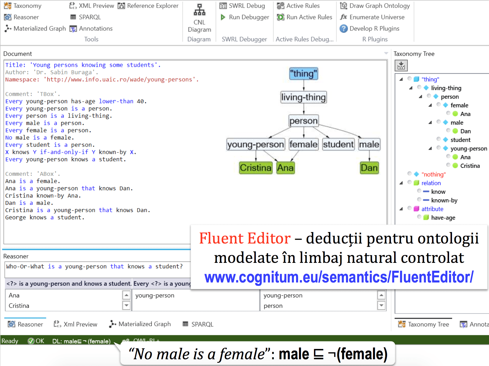
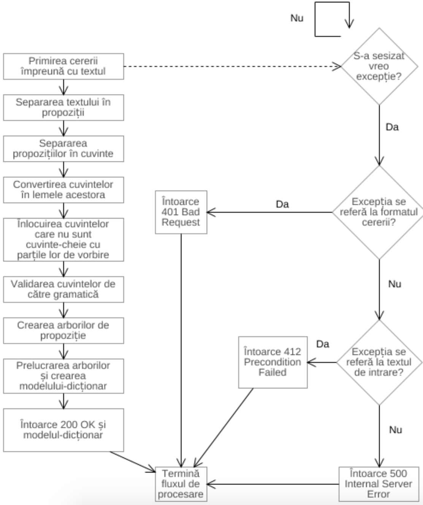
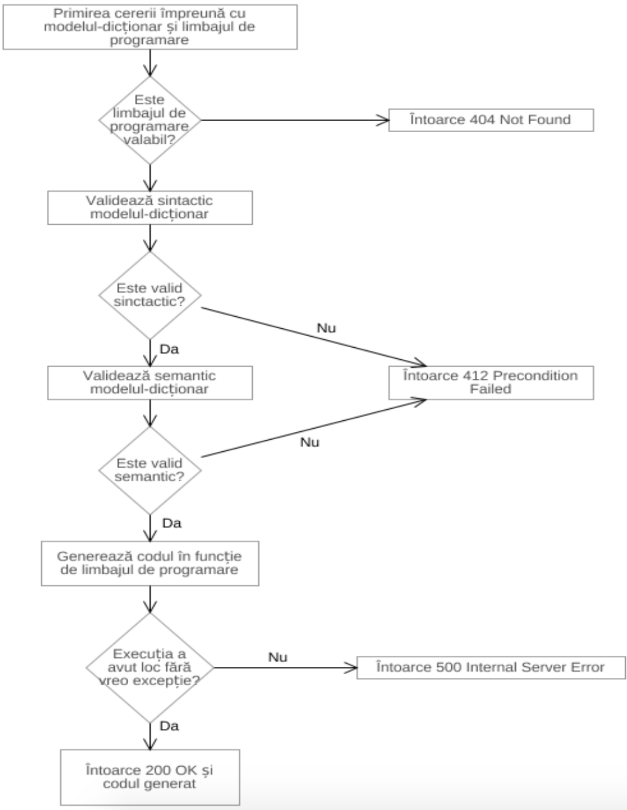
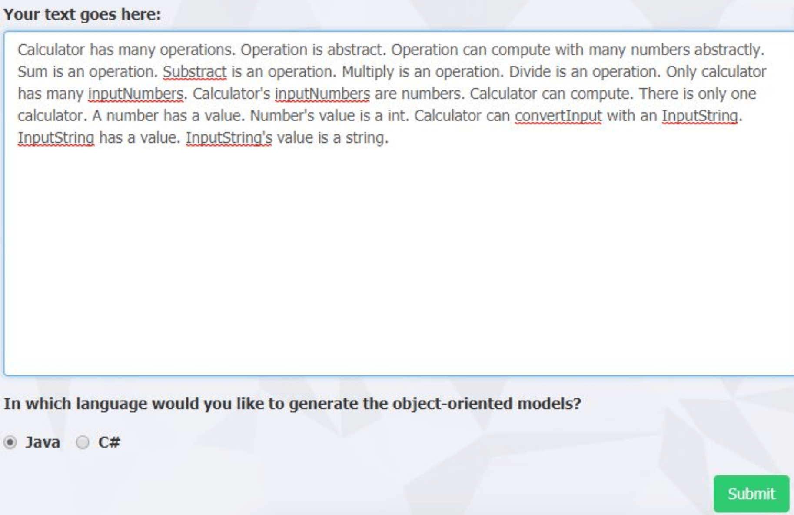
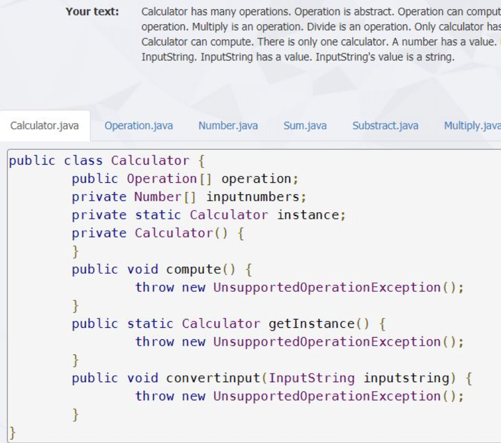
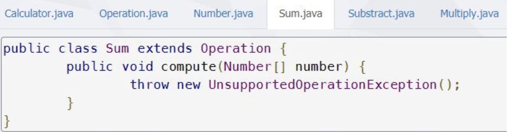

Data publicării: 29.07.2017
Autor articol: Sabin Buraga
Punerea problemei
Indubitabil, programarea orientată-obiect este una dintre cele mai populare metode de a modela concepte din lumea reală spre a fi prelucrate la nivel de calculator. Această paradigmă reduce atât diferențele semantice dintre lumea concretă și un sistem software, cât și complexitatea funcțională a acestuia din urmă, datorită ușurinței și flexibilității cu care conceptele ce trebuie gestionate informatic sunt abstractizate și ajung să fie procesate de către mașina care le manipulează starea (Booch, 1994).
Articolul de față descrie maniera de proiectare, dezvoltare și exploatare a unei aplicații menită să prelucreze un text scris într-un limbaj natural controlat, să extragă conceptele aliniate paradigmei obiectuale și să le modeleze la nivelul unuia sau mai multor limbaje de programare obiectuale. O astfel de aplicație ajută la dezvoltarea produselor software oferind un cadru de modelare rapidă a conceptelor necesare, independent de limbajul de programare. De asemenea, ea poate fi folosită și de către persoane fără cunoștințe de programare orientată-obiect, pentru familiarizare și învățare (auto-instruire). Astfel, putem considera ca public-țintă următoarele categorii de utilizatori:
- Utilizatorii din mediul de afaceri care trebuie să comunice cerințe ale unui produs software către persoane din domeniul IT (analiști, programatori). Aceștia cunosc modificările care trebuie aduse produsului în cauză, însă discuția cu persoanele din domeniul informatic nu este mereu o discuție ușoară. Folosind aplicația, ei pot converti cerințele lor din limbajul pe care îl cunosc (limbajul natural) în cod, pe care îl pot trimite ulterior dezvoltatorilor software.
- Persoanele fără cunoștințe sau având cunoștințe precare în domeniul informaticii care au nevoie de un instrument capabil să expună legătura dintre obiecte și codul-sursă ce modelează acele obiecte.
- Utilizatorii dezvoltatori de software ce folosesc aplicația sau consumă serviciile expuse de aceasta pentru uzul în aplicațiile proprii.
Actualmente, există diverse soluții de identificare a entităților și a proprietăților acestora dintr-un text scris în limbaj natural (e.g., Natural Language Toolkit pentru Python sau serviciile Watson Natural Language Understanding oferite de IBM) – concentrate, în principal, pe textele redactate în limba engleză. De asemenea, sunt disponibile și servicii specifice care, primind tipuri specifice de date de intrare, pot modela, de exemplu, diagrame (reprezentări vizuale ale claselor și altor entități) – o exemplificare în acest sens este aplicația Web yUML.

O altă aplicație interesantă este Fluent Editor care poate modela ontologii pornind de la limbaj natural controlat. Utilizatorul se poate folosi de expresii predefinite precum “every“, “no” sau “is-a” pentru a exprima proprietăți și relații între entități. Rezultatul este o ontologie care reprezintă concepte, relații între concepte, proprietăți de interes etc. De asemenea, poate răspunde la întrebări de tipul “Who is-a?”. Un exemplu de utilizare se regăsește în (Buraga, 2017) și poate fi urmărit în figura 1.
Aceste tipuri de aplicații, fie prin limbaj natural sau prin date de intrare într-un format specific, pot modela concepte din viața reală, însă rezultatul nu este transpus natural în cod. O altă abordare – adoptată, spre exemplu, de Google Blockly – se bazează pe paradigma programării vizuale, dar utilizatorul trebuie să depună efort suplimentar să învețe și să se obișnuiască cu metodele proprii de reprezentare a conceptelor de programare.
Obiectivul acestei lucrări este prezentarea unei soluții de modelare care să răspundă tuturor acestor condiții: transformarea unui text scris în limbaj natural în cod orientat obiect, adică extragerea și modelarea conceptelor din text și generarea codului cu un efort minim din partea utilizatorului.
Arhitectura soluției propuse
Soluția aleasă pentru dezvoltare se bazează pe multiple servicii Web: un serviciu de prelucrare a textului natural, care extrage tipurile de concepte folosind o gramatică și construiește o structură de modelare, un serviciu de generare de cod care, plecând de la structura construită anterior, generează clase și metode în mai multe limbaje de programare și un serviciu de integrare, care gestionează întreg procesul realizat.
Concret, aplicația este compusă din două servicii Web independente – serviciul de procesare de text și serviciul de generare de cod – și un serviciu de integrare ce concatenează fluxul celorlalte două servicii. Concatenarea se realizează cu ajutorul unei scheme de modelare independentă de limbaj. Apelând serviciul de integrare, din textul primit la intrare se obține codul-sursă ce modelează construcțiile obiectuale dorite.
Pentru aceasta, trebuie să putem extrage și modela într-un limbaj de programare țintă noțiunile clasice de clasă, moștenire, clasă abstractă, interfață, clasă finală, membru, metodă, constructor, modificator de acces.
Serviciul de procesare a textului furnizat de utilizator
Acest serviciu se ocupă cu identificarea în textul de intrare a conceptelor cerute și expunerea acestora într-o manieră ce nu depinde de niciun limbaj de programare. Procesarea are la bază o gramatică, în spiritul limbajelor formale. Aceasta impune restricțiile textului pentru a garanta existența (corectitudinea) datelor utile. Gramatica folosește și la specificarea anumitor combinații de cuvinte-cheie pentru a identifica un anumit concept. Spre exemplu sintagma “is a” reprezintă relația de moștenire, iar sintagma “has a” definește existența unei variabile în cadrul unei clase. Tot cu ajutorul acestei gramatici, putem crea arborii propoziționali care pot fi prelucrați pentru a culege informațiile necesare modelării. La finalul prelucrării, datele culese sunt trimise sub o formă de dicționar ce modelează conceptele cerute – pentru amănunte, a se consulta (Gordîn, 2017).
Întregul proces este prezentat succint de diagrama din figura de mai jos.

La nivel de implementare, s-a recurs la Python. Pentru a facilita expunerea funcționalităților ca serviciu Web se utilizează biblioteca Bottle. Maniera de prelucrare a limbajului natural controlat recurge la biblioteca NLTK (Bird, Klein & Loper, 2009).
Serviciul de generare a codului-sursă
Acest serviciu primește la intrare un model de date structurat de tip dicționar, plus un limbaj de programare țintă.
După validare (sintactică și semantică), modelul este analizat de un generator specific limbajului de programare dat la intrare ce convertește modelul-dicționar în cod compilabil. Fluxul complet al acțiunilor realizate este expus în figura 3.
Deoarece metoda prin care se generează codul trebuie să fie una extensibilă relativ la limbajele de programare ce pot fi folosite, am ales ca structura generatorului de cod să fie dependentă doar de structura modelului-dicționar.
În ideea extensibilității, considerăm că există câte un generator de cod pentru fiecare limbaj de programare adăugat în serviciu. Pentru a impune restricții în comportamentul fiecărui generator, există o interfață pe care orice generator trebuie să o implementeze. Această interfață impune convertirea fiecărui element modelabil (clasă, variabilă, metodă sau parametru) într-un șir de caractere. Deci, pentru fiecare element există o anumită metodă ce trebuie implementată.
Pentru implementare s-a recurs la platforma .NET Core cu ajutorul facilităților privind adnotarea datelor (DataAnnotations), un modul extensibil, facil de utilizat. Interfața IGenerator menționată mai sus are în prezent două implementări: una pentru limbajul Java, cealaltă pentru C#, cu diferențele de rigoare. Alte detalii sunt furnizate de Gordîn (2017).

Serviciul de integrare
Serviciul de integrare are rolul de a coordona interacțiunea dintre serviciul de procesare de text și serviciul de generare a codului-sursă. Acesta, primind un text și un limbaj de programare, comunică cu cele două servicii pentru a crea fluxul complet al aplicației, oferind codul ce modelează textul de la intrare.
Pentru aceasta, se recurge la un fișier de configurare în format JSON (JavaScript Object Notation).
Studiu de caz
În continuare, va fi furnizat un exemplu pragmatic, perechile datelor de intrare-ieșire fiind expuse via o interfață grafică.
Specificarea unui calculator de buzunar
Un prim exemplu vizează modelarea unui calculator de buzunar, putând fi util pentru învățarea conceptelor orientate-obiect de către programatorii novici. Calculatorul trebuie să poată primi o mulțime de numere și să poată efectua operațiile de bază cu acestea. De asemenea, se impune ca acesta să respecte șablonul de proiectare Singleton și să fie implementat în Java.

Interfața Web de preluare a textului exprimat în limbaj natural controlat e ilustrată de figura 4.
Rezultatul (codul-sursă Java generat) poate fi urmărit în capturile-ecran următoare – se observă generarea tuturor fișierelor de cod ce specifică fiecare entitate (clasă, operație etc.) în parte.
Filmul demonstrativ al rulării aplicației prezentate este disponibil pe Web la adresa http://www.youtube.com/watch?v=7w_ODvzi6Zk.


Concluzii
În cadrul acestui articol au fost discutate cele mai importante aspecte privind conceperea unei aplicații bazate pe servicii Web ce convertește un text exprimat în limbaj natural controlat într-un limbaj de programare obiectual.
Cele expuse mai sus reprezintă o parte dintre contribuțiile științifice cu caracter teoretic și aplicativ realizate în cadrul lucrării de licență susținute la Facultatea de Informatică de către absolventul Ștefan Gordîn sub îndrumarea lui Sabin-Corneliu Buraga.
Referințe bibliografice
- Booch, G., Object-Oriented Analysis and Design with Applications (Second Edition), Addison Wesley, 1994
- Bird, S., Klein, E., Loper, E., Natural Language Processing with Python, O’Reilly, 2009 – disponibilă on-line la http://www.nltk.org/book/
- Buraga, S., “Ontologii în contextul WWW”, Dezvoltarea aplicatiilor Web, Facultatea de Informatică, UAIC Iași, România, 2017: http://profs.info.uaic.ro/~busaco/teach/courses/wade/presentations/web10SemanticWeb-Ontologii-OWL2-BazeDeCunostinte-LogicileDescrierii-Rationamente.pdf
- Gordîn, Ș., Modelare orientată-obiect – de la limbă la limbaj, Teză de licență, Facultatea de Informatică, Universitatea “Alexandru Ioan Cuza” din Iași, 2017.
- * * *, Fluent Editor, 2017: http://www.cognitum.eu/semantics/FluentEditor/
- * * *, Google Blockly, 2017: http://developers.google.com/blockly/
- * * *, Natural Language Toolkit, 2017: http://www.nltk.org/
- * * *, IBM Watson Natural Language Understanding, 2017: http://www.ibm.com/watson/services/natural-language-understanding/
- * * *, yUML, 2017: http://yuml.me/diagram/scruffy/class/samples